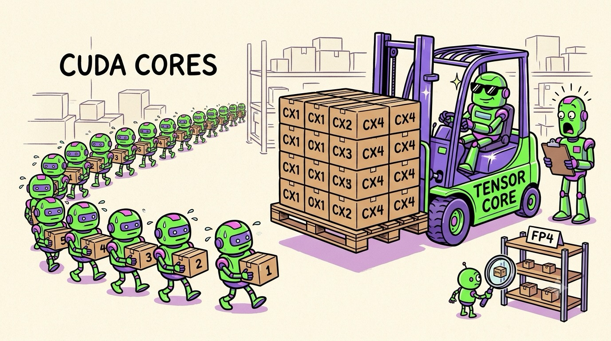

Chapter 07 · The AI Hardware
Tensor Cores & the Precision Game
In 2017, NVIDIA looked at what AI workloads actually do all day — multiply matrices, multiply matrices, occasionally multiply matrices — and made a very GPU move: they built a circuit that does nothing else. The Tensor Core doesn't process numbers one multiply at a time; it devours whole small matrices per clock cycle. Understand it, plus one sneaky idea called mixed precision, and you'll know why AI GPUs advertise absurd numbers like "20 petaFLOPS."
From scalar to matrix bites
A regular CUDA core computes, per cycle, roughly one fused multiply-add:
d = a × b + c, on single numbers. A Tensor Core executes an entire
matrix multiply-accumulate as one hardware operation:
Why does one instruction matter so much? Two reasons. First, density: a multiply circuit hard-wired into a fixed matrix pattern needs far less area and power than the same math built from independent, individually-scheduled cores — so you can pack in enormously more of it. Second, data reuse: inside the matrix unit, every loaded value is used many times by wiring alone, no cache lookups, no register traffic. It's Chapter 5's whole sermon — reuse beats bandwidth — implemented in copper.
The precision game
Now the second idea, the one that multiplied AI performance again and again without changing the clock speed: use smaller numbers.
Scientific computing uses 32- or 64-bit floating point, because simulations
compound tiny errors into catastrophes. But neural networks turned out to be
shockingly forgiving — they're smoothed, averaged, error-tolerant statistical
machines. A weight of 0.73146 versus 0.73? The model
shrugs. And halving the bits per number is a triple win: 2× less memory
used, 2× less bandwidth needed, ~2× more math per second (smaller
multipliers → more of them fit).
The trick is mixed precision, not just low precision: multiply in FP16/FP8/FP4, but accumulate the running sum in higher precision (adding thousands of tiny products is where error snowballs), and keep a master FP32 copy of weights during training. Hopper's "Transformer Engine" even reshuffles scaling per layer, per step, automatically. You get small-number speed with big-number stability — the whole game is knowing where precision matters.
What this buys, in real numbers
| GPU (year) | Tensor generation | Headline math |
|---|---|---|
| V100 (2017) | 1st gen — FP16 | 125 TFLOPS |
| A100 (2020) | 3rd gen — +BF16/TF32 | 312 TFLOPS FP16 |
| H100 (2022) | 4th gen — +FP8 | ~2,000 TFLOPS FP8 |
| B200 (2024–25) | 5th gen — +FP4/FP6 | ~9,000 TFLOPS FP4 |
~70× in eight years, while regular FP32 performance grew maybe 6×. That gap is the Tensor Core + precision story. (Spec-sheet asterisk: vendors often quote "with sparsity" numbers — the hardware can skip zeroed-out weights for up to 2× more — so always check whether a headline FLOPS figure says dense or sparse.)

A funny zine-style cartoon warehouse scene, hand-drawn ink with flat colors (electric green, violet, pink on cream paper). Left: a line of sweaty little robot workers labeled "CUDA CORES" each carrying one tiny numbered box at a time, forming a long queue. Right: a massive gleaming forklift labeled "TENSOR CORE" smugly lifting an entire pallet stacked as a neat 4×4 grid of boxes in one go, driver robot wearing sunglasses. A supervisor clipboard-robot's jaw drops. In the corner, a tiny shelf labeled "FP4" holds comically minuscule boxes while a worker squints at them with a magnifying glass. Exaggerated, playful, no small unreadable text. Target size ~1280×720px, 16:9 landscape; composed for a small on-page figure, subject centred with safe margins — it is letterboxed into a 16:9 box, so keep nothing important near the edges.
Generate this with your image agent, then drop the file here.
Tensor Cores only fire when the problem is a matrix multiply of the
right shape and type — frameworks like PyTorch route matmul/conv
layers there via libraries like cuBLAS and cuDNN. Elementwise ops, weird shapes,
or FP32-only code fall back to plain CUDA cores at a fraction of the headline
speed. When someone's "H100 benchmark" runs 20× below spec, the answer is
usually: nothing they ran ever touched the Tensor Cores.
The GPU keeps climbing an abstraction ladder of "what's the unit of work?" Pixels → threads → warps → whole matrix tiles. Each rung trades generality for staggering efficiency at the thing everyone actually does. Tensor Cores are the reason "GPU" and "AI chip" became synonyms.
So one GPU can do quadrillions of operations per second. And yet — a single ChatGPT-class model doesn't fit on one, and answers still take seconds. Why? The answer lives back in Chapter 5's memory mountain, and it's the best story in this book. Next: what actually happens when you ask an LLM a question.
Sources NVIDIA, "Train With Mixed Precision" guide (docs.nvidia.com) · NVIDIA H100/Blackwell architecture whitepapers (nvidia.com) · Exxact, "Comparing Blackwell vs Hopper" (exxactcorp.com) · Micikevicius et al., "Mixed Precision Training" (arxiv.org/abs/1710.03740)